Introduction
This post will cover the following topics
- Differences between Bayesian and Frequentist Approaches
- A Simple Bayesian Analysis
- Simple Bayesian Linear Regression
Bayesianism vs Frequentism
In the simplest terms, in Frequentism parameters are fixed while data can vary.Whereas, in Bayesianism parameters can vary while data is fixed
For frequentists,probability only has meaning in terms of a limiting case of repeated measurements, it is fundamentally related to the frequencies of events.
For example, think of a factory that makes biased coins.We gather several coins made by the factory (assume that the factory equipment has 100% precision), and flip each of them N times, measuring the number of times heads is seen. Each time you would get a slightly different answer because of the way you hold the coin or how much force you applied when flipping the coin.
In the limit of a large number of measurements, the frequency of any given value indicates the probability of measuring that value. This means it is meaningless to talk about the probability of the true bias of the factory, this true bias is a fixed value and it cannot assume any kind of frequency distribution.
For Bayesians, the concept of probability is extended to cover degrees of certainty about statements. Probabilities are fundamentally related to our knowledge of an event. Therefore Bayesians can meaningfully talk about the true bias of the factory, this probability only codifies our knowledge of the true bias of the factory based on prior knowledge and data.
Confidence Intervals vs Credible Intervals
The Bayesian analogue of the commonly used Frequentist Confidence Interval is the Credible Interval. Although both sound similar and often yield identical results, their interpretations are quite different.
In Bayesianism, probability distributions reflect degrees of belief, so a 95 % credible interval [a,b] of a parameter \(\mu\) is equivalent to saying:
Given our observed data, there is a 95% probability that the true value of \(\mu\) falls within the credible interval [a,b]
The frequentist 95% confidence interval [a,b] is equivalent to saying
There is a 95% probability that when I compute this confidence interval from data of this sort, the true mean will fall within this confidence interval
Note the difference: the Bayesian solution is a statement of probability about the parameter value given fixed bounds. It fixes the credible region, and guarantees that 95% of possible values of \(\mu\) fall within it.
The frequentist solution is a probability about the bounds or intervals given a fixed parameter value. It fixes that parameter and guarantees that 95% of possible confidence intervals will contain it.
A criticism of frequentist inference is that it often answers the wrong question. It relies on data of this sort or a hypothetical space of observations like what we have observed so far. This may lead one to answers that don’t tell you anything meaningful about the particular data observed.
If you want to ask what the confidence interval can tell you given the particular data already observed, all it can say is that: Given the observed data, the true value of \(\mu\) is either in the confidence interval or it isn’t. If you are only interested in what particular observed data is telling you, frequentism is not very useful.
Null Hypothesis Significance Testing
Consider some data we received from an experimenter who was measuring the bias of a coin. The data indicates that were 7 HEADS (z) out of a total of 24 tosses (N).
Frequentist Approach
Experimental design or setup is very important when using frequentist approaches.In other words the intent of the experimenter has an impact on the inferences we make.
The null hypothesis we want to evaluate is:
H0: The bias of the coin is 0.5 or alternatively H0: \[ \theta = 0.5 \]
To evaluate whether the observation suggests that the coin is biased ,we need to calculate the p-value. The p-value is the probability of getting a sample outcome from the sampling distribution that is as or more extreme than the actual outcome.
Now the sampling distribution depends on the intent of the experimenter which can be 1. Did he do the experiment with the intent to record 24 coin flips 2. Did he continue the experiment until he observed 7 HEADs
If the experimented did not tell us what his intent for the experiment was, we could reach two different conclusions based on the same data.
For fixed N
If the experimenter’s intent was the first one listed above. The sampling distribution and the p- value are obtained by consider a binomial probability distribution.
The p-value is given by:
p_value <- pbinom(7,24,0.5)
print(p_value)## [1] 0.03195733The sampling distribution is given below.
library(ggplot2)
z <- c(0:24)
P <- dbinom(c(0:24),24,prob = 0.5)
ggplot(data.frame(z,P),aes(x=z,y=P)) + geom_bar(stat = 'identity',fill = 'cornflowerblue')+
geom_vline(xintercept =7,col='red')+
geom_segment(aes(x=7,y = 0.025,xend = 0,yend=0.025),
arrow = arrow(length = unit(0.02,"npc")))+
geom_text(aes(x = 4, y =0.04),label=paste0('P value = ',round(p_value,3)))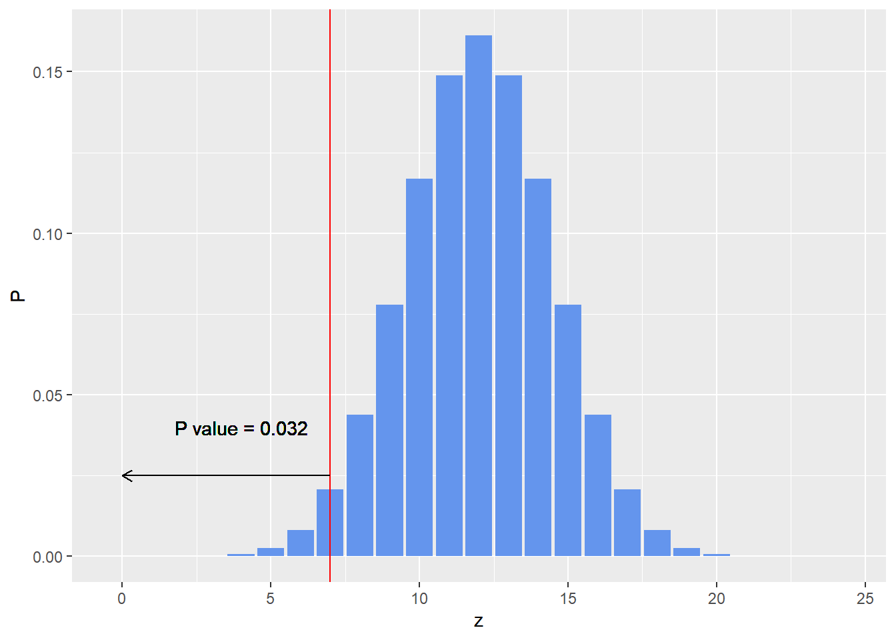
For fixed z
If the experimenter’s intent was the second one listed above i.e. to continue the experiment until he sees 7 HEADS, the sampling distribution and the p- value are obtained by considering a negative binomial probability distribution.
The p-value is given by:
n_heads =7
n_tails = 16
p_value <- 1 - pnbinom(n_tails, n_heads,0.5)
print(p_value)## [1] 0.01734483The sampling distribution is given below.
library(ggplot2)
N <- c(0:50) # Number of possible tails observed before 7th head is observed
P <- dnbinom(N,size = 7,prob = 0.5)
ggplot(data.frame(N,P),aes(x= N,y=P)) + geom_bar(stat = 'identity',fill = 'cornflowerblue')+ geom_vline(xintercept = 24 ,col='red')+
geom_segment(aes(x= 24,y = 0.025,xend = 50,yend=0.025),
arrow = arrow(length = unit(0.02,"npc")))+
geom_text(aes(x = 30, y =0.04),label=paste0('P value = ',round(p_value,3)))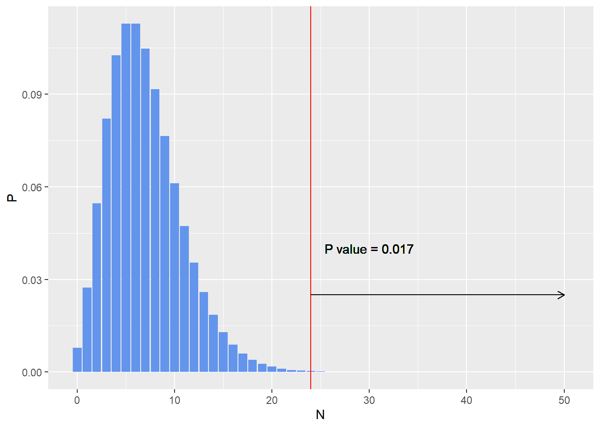
In both cases above the null hypothesis can be rejected given the p-value is less than 0.05, but it can be seen that based on the intentions of the experimenter, the p-value can be different.
Bayesian Approach
The Bayesian approach to hypothesis testing does not depend on the intentions of the experimenter. The likelihood function in this approach is the Binomial likelihood function, just as in the frequentist approach described above.
In the Bayesian approach, we also need to choose a prior which encodes our prior belief about the fairness of the coin. To make the analysis easier the prior can be a Beta distribution which is conjugate of the binomial likelihood function.
One possible Beta prior is Beta(2,2) which indicates a weak prior belief in the fairness of the coin. This encodes a distribution as shown below:
set.seed(0)
plot(density(rbeta(10000,2,2)),main = "Prior 1",xlab="")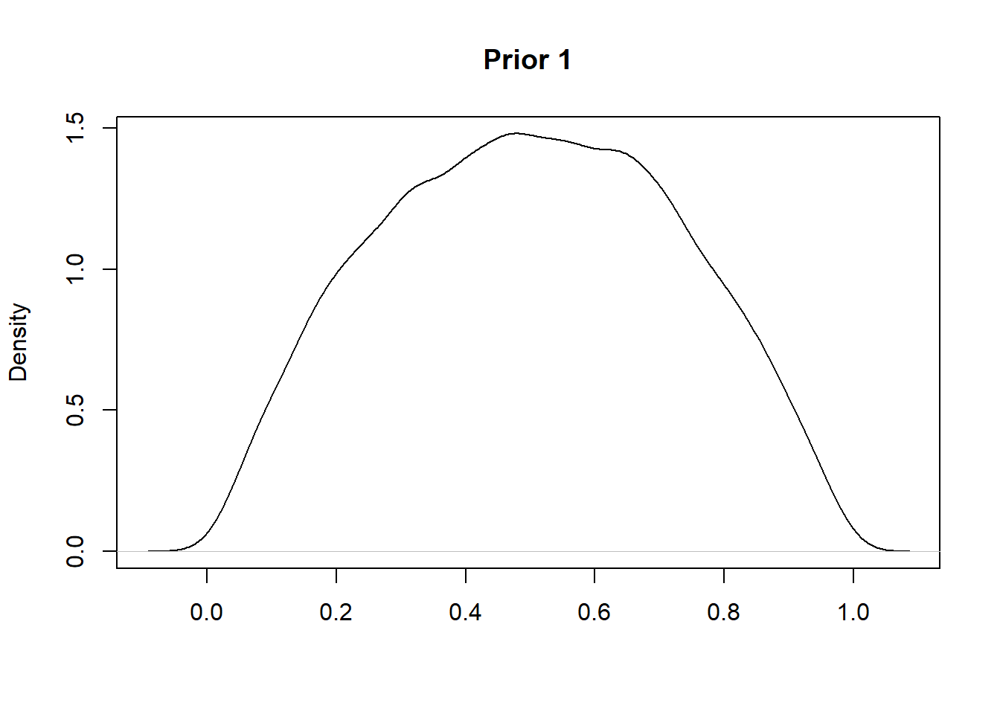
Another possible prior is a strong belief in the tail bias of a coin.
set.seed(0)
plot(density(rbeta(10000,2,20)),main = "Prior 2",xlab="")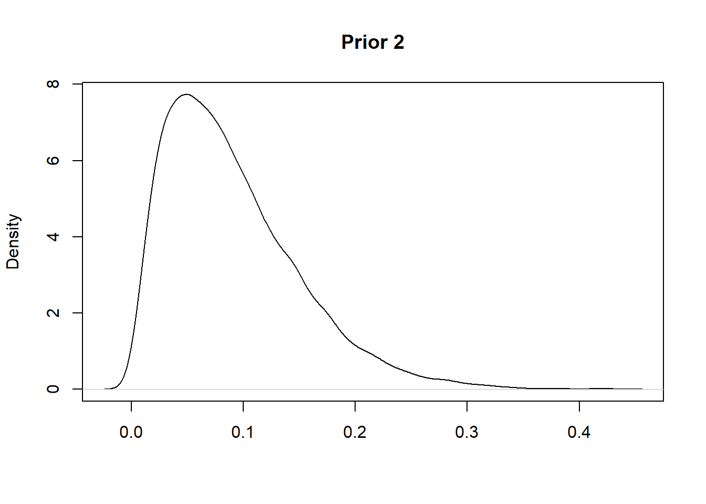
Note that while the frequentist approach above uses conditional distributions of data given a fixed hypothesis, e.g. \(\theta = 0.5\), the bayesian uses a probability distribution over all possible hypotheses.
The posterior distribution over all possible hypotheses is given by the Baye’s rule.
\[ P(H|D) = \frac{P(D|H) P(H)}{P(D)} \]
Now H is a hypothesis and D is data which may give evidence for or against H. Each term in Bayes’ formula has a name and a role.
- The prior P(H) is the probability that H is true before the data is considered.
- The posterior P(H | D) is the probability that H is true after the data is considered.
- The likelihood P(D | H) is the evidence about H provided by the data D.
- P(D) is the total probability of the data taking into account all possible hypotheses
For the prior 1 considered above the posterior will be a Beta(2+7,2+17)
plot(density(rbeta(10000,9,19)),main = "Posterior 1",xlab=expression(theta))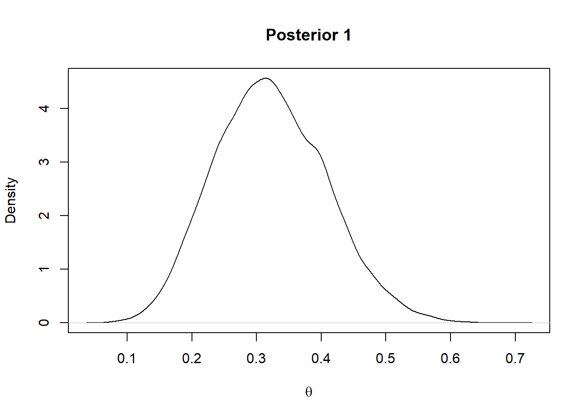
For the prior 2 considered above the posterior will be a Beta(2+7,20+17)
plot(density(rbeta(10000,9,37)),main = "Posterior 2",xlab=expression(theta))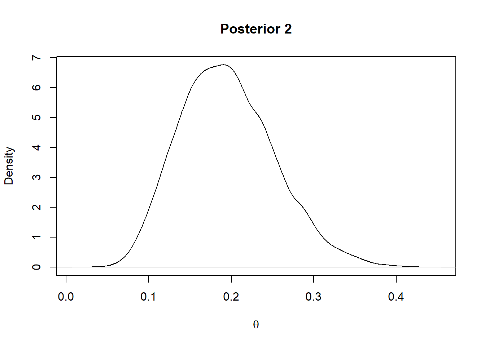
In summary, according to the statistician Larry Wasserman:
The Goal of Frequentist Inference: Construct procedure with frequency guarantees. (For example, confidence intervals.)
The Goal of Bayesian Inference: Quantify and manipulate your degrees of beliefs. In other words, Bayesian inference is the Analysis of Beliefs.
Simple Bayesian Analysis using MCMC
\[ P(H|D) = \frac{P(D|H) P(H)}{P(D)} \] For computing the expression above one has to calculate the term P(D) which for complex models involves the calculation of very complex integrals that are not analytically tractable. The most commonly used alternative to this is Markov Chain Monte Carlo, which allows for the estimation of the posterior, without calculating the complex integral.
The estimation of the bias of a coin in the example above can be carried out using MCMC. JAGS (Just Another Gibbs Sampler) is a software package that provides an MCMC sampler that can be used for this. JAGS can be be accessed in R using the rjags package.
source("utilities.R")##
## *********************************************************************
## Kruschke, J. K. (2015). Doing Bayesian Data Analysis, Second Edition:
## A Tutorial with R, JAGS, and Stan. Academic Press / Elsevier.
## *********************************************************************require(rjags)
require(coda)The data to be analyzed is a sequence of coin tosses with 7 heads (represented by 1) and 17 tails (represented by 0).
y <- c(rep(1,7),rep(0,17))
#Get number of observations
Ntotal <- length(y)
#Wrap the data in a list for later shipment to JAGS
dataList<- list(y=y,Ntotal= Ntotal)Now specify the first model with the weak prior.
model1 <-
"
model{
for(i in 1:Ntotal){
y[i] ~ dbern( theta ) #likelihood
}
theta ~ dbeta(2,2) # prior
}
"And the second model with the strong prior.
model2 <-
"
model{
for(i in 1:Ntotal){
y[i] ~ dbern(theta) #likelihood
}
theta ~ dbeta(2,20) #prior
}
"Now initialize the MCMC chain, the MLE estimate of the chosen likelihood function is a suitable candidate.
thetaInit <- sum(y)/length(y)
initsList <- list(theta = thetaInit)Now we can run the chains, when running the chains it is typical to specify a burn in period so as to discard the few initial values before the chain has settled on the true posterior. The number of steps to be taken to tune/adapt the samplers can also be specified.
parameters = c( "theta") # The parameters to be monitored
adaptSteps = 500 # Number of steps to adapt/tune the samplers
burnInSteps = 500 # Number of steps to burn-in the chains
nChains = 4 # nChains should be 2 or more for diagnosticsSpecify the model in JAGS
# Create, initialize, and adapt the model:
jagsModel1 = jags.model(textConnection(model1) , data=dataList , inits=initsList ,
n.chains=nChains , n.adapt=adaptSteps )## Compiling model graph
## Resolving undeclared variables
## Allocating nodes
## Graph information:
## Observed stochastic nodes: 24
## Unobserved stochastic nodes: 1
## Total graph size: 27
##
## Initializing model jagsModel2 = jags.model(textConnection(model2) , data=dataList , inits=initsList ,
n.chains=nChains , n.adapt=adaptSteps )## Compiling model graph
## Resolving undeclared variables
## Allocating nodes
## Graph information:
## Observed stochastic nodes: 24
## Unobserved stochastic nodes: 1
## Total graph size: 28
##
## Initializing modelLet the chains burn in..
# Burn-in:
cat( "Burning in the MCMC chain...\n" )## Burning in the MCMC chain... update( jagsModel1 , n.iter=burnInSteps )
update( jagsModel2 , n.iter=burnInSteps )Save the mcmc samples..n.iter gives number of steps to save per chain..
# The saved MCMC chain:
cat( "Sampling final MCMC chain...\n" )## Sampling final MCMC chain... codaSamples1 = coda.samples( jagsModel1 , variable.names=parameters ,
n.iter=2500)
codaSamples2 = coda.samples( jagsModel2 , variable.names=parameters ,
n.iter=2500)Now the MCMC chains should be diagnosed for 1) Representativeness 2) Accuracy 3) Efficiency
These attributes are analyzed below.
diagMCMC( codaSamples1 , parName="theta")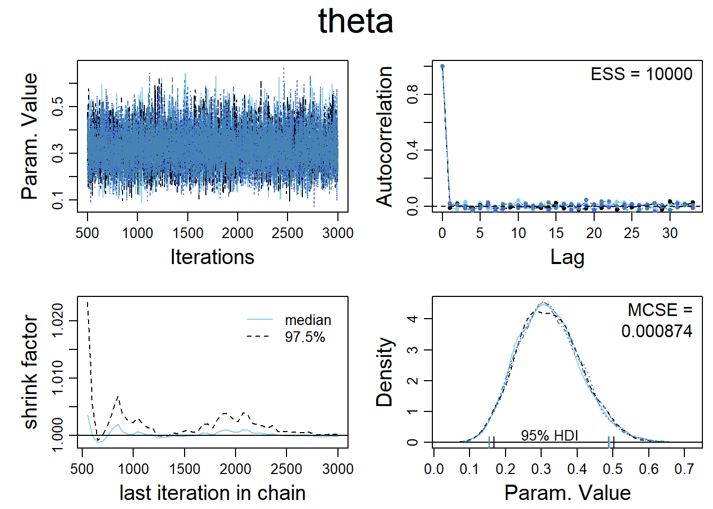
The plot in the top left hand corner is a trace plot. If you see an orphaned chain exploring values that are not close to values being explored by the other chains, it is a symptom of incomplete convergence.
The density plot in the bottom right hand corner indicates that the posterior explored by each of the 4 MCMC chains are adequately superimposed, which indicates convergence.
The plot in the bottom left hand corner shows the shrink-factor, more formally called the ‘Brooks-Gelman-Ruben’ statistic.It is a measure of the ratio of between chain variance to within chain variance.If there is convergence this ratio should be close to 1.
The plot on the top right hand corner shows the auto correlation of the MCMC chains. Highly autocorrelated chains do not yield additional information in successive steps, which requires the use of longer chains.This is also captured through the Expected Sample Size, A highly auto correlated chain will yield a much smaller ESS than the steps actually sampled.
For accurate and stable estimates of the 95% HDI limits, an ESS of 10,000 is often recommended.
Now the posterior distribution can be analyzed. A few terms are handy in the analysis of the posterior distribution.
95% HDI: This range included 95% of the total probability in the distribution such that the density at any point inside the interval is greater than the density of any point outside the interval.
ROPE: Region of Practical Equivalence. This is used to define a margin of error around any specific value we are interested. For example although an unbiased coin has a P(H) = 0.5 , for practical purposes, we might consider any probability between 0.45 and 0.55 to be practically equivalent to 0.5
plotMCMC(codaSamples1,data = data.frame(y), compVal=0.5 , rope=c(0.45,0.55))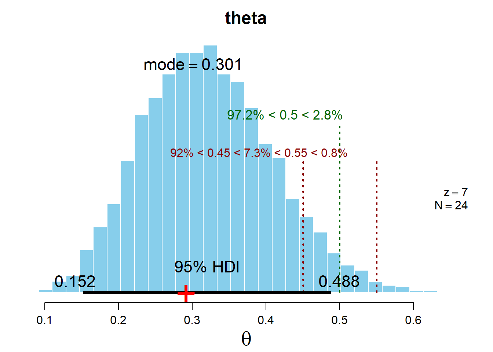
plotMCMC(codaSamples2,data = data.frame(y), compVal=0.5 , rope=c(0.45,0.55))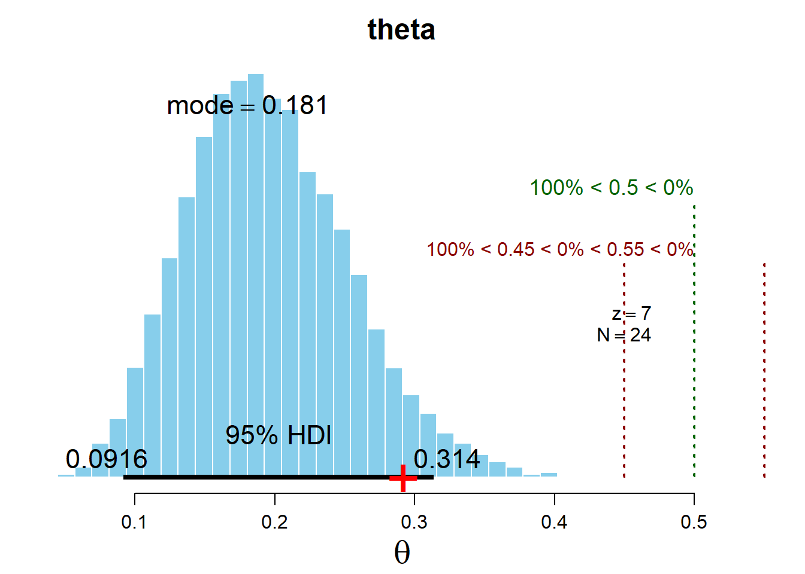
Simple Bayesian Linear Regression
This is an example of simple linear regression in Stan, a cutting edge Bayesian software that uses a different MCMC algorithm called Hamiltonian Monte Carlo. R Studio provides auto completion and syntax correction for Stan programs.
The data used is the commonly used mtcars data set and the relationship being studied is between mpg and displacement.
attach(mtcars)
ggplot(data= mtcars,aes(x=disp,y=mpg)) + geom_point(fill='cornflowerblue')+
geom_smooth(method = 'lm')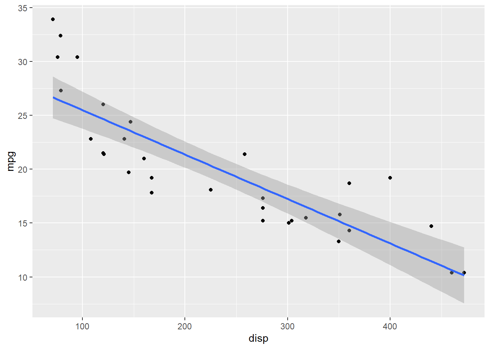
The regression coefficients and fit statistics from the regression are as follows
summary(lm(mpg~disp,data=mtcars))##
## Call:
## lm(formula = mpg ~ disp, data = mtcars)
##
## Residuals:
## Min 1Q Median 3Q Max
## -4.8922 -2.2022 -0.9631 1.6272 7.2305
##
## Coefficients:
## Estimate Std. Error t value Pr(>|t|)
## (Intercept) 29.599855 1.229720 24.070 < 2e-16 ***
## disp -0.041215 0.004712 -8.747 9.38e-10 ***
## ---
## Signif. codes: 0 '***' 0.001 '**' 0.01 '*' 0.05 '.' 0.1 ' ' 1
##
## Residual standard error: 3.251 on 30 degrees of freedom
## Multiple R-squared: 0.7183, Adjusted R-squared: 0.709
## F-statistic: 76.51 on 1 and 30 DF, p-value: 9.38e-10To do the same in Stan, you need to specify priors for the slope, intercept and error parameters.The noise distribution which in the case of simple linear regression can be a normal distribution.
\[ \hat{y} \sim N(\beta_0 + \beta_1x, \sigma) \]
The priors on \(\beta_0\)and\(\beta_1\) can be weakly informative priors on the scale of the data. .
\[ \beta_0 \sim N(25,1000) \]
\[ \beta_1 \sim N(0,100) \]
\[ \sigma \sim Uniform(sd(Y)/1000,1000sd(Y)) \]
Specify data for shipment to Stan
library(rstan)
dataList <- list(
x <- mtcars$disp,
y <- mtcars$mpg,
sdy <- sd(y),
Ntotal <- length(y)
)Specify the model..
data{
int<lower=1> Ntotal;
real x[Ntotal];
real y[Ntotal];
real sdy;
}
transformed data{
real unifLo;
real unifHi;
unifLo = sdy/1000;
unifHi = sdy*1000;
}
parameters{
real beta0;
real beta1;
real <lower=0> sigma;
}
model{
//Priors
sigma ~ uniform(unifLo,unifHi);
beta0 ~ normal(25,1000);
beta1 ~ normal(0,100);
//Likelihood
for(i in 1:Ntotal){
y[i] ~ normal(beta0 + beta1*x[i], sigma);
}
}Specify MCMC parameters..
# RUN THE CHAINS
parameters = c( "beta0" , "beta1" , "sigma" )
adaptSteps = 500 # Number of steps to "tune" the samplers
burnInSteps = 1000
nChains = 4
###Use multiple cores if available
options(mc.cores = parallel::detectCores()-1)Get MCMC sample…
# Get MC sample of posterior:
stanFit <- sampling( object=stan_fit ,
data = dataList ,
#pars = parameters , # optional
chains = nChains ,
iter = 2500, #number of steps to sample from each chain
warmup = burnInSteps )Get summary of the posterior distribution and MCMC diagnostics,,
fit_summary <- summary(stanFit)
print(fit_summary$summary)These credible regression lines can be plotted against the original data to carry out a posterior predictive check..
library(tidyr)
library(dplyr)
library(magrittr)
summary <- data.frame(t(as.matrix(fit_summary$summary)))
summary$X <- rownames(summary)
summary <- summary %>%
select(X,beta0,beta1)%>%
filter( grepl('%', X))
ggplot(mtcars,aes(x=disp,y=mpg)) + geom_point()+
geom_abline(data=summary,aes(slope = beta1,intercept=beta0,col =X))+
theme(legend.title = element_blank())Th posterior distributions can be visualized..
stan_dens(stanFit)This certainly looks like a lot more work then fitting a simple linear model.To make Bayesian modeling easier packages like rstanarm provide a convenient wrapper around Stan.
library(rstanarm)
stan_glm2 <- stan_glm(mpg~disp, data = mtcars, family = 'gaussian',
prior = normal(0,100),prior_intercept = normal(25,1000),
chains = 4,iter =2500,cores=4)The posterior parameter estimates of the model are again very similar to that in the frequentist approach
posterior_interval(stan_glm2,prob=0.95)## 2.5% 97.5%
## (Intercept) 27.05312572 32.19917527
## disp -0.05135965 -0.03186019
## sigma 2.60862309 4.42986602Again note here that it is a valid assertion to make that there is a 95% probability that the parameter lies in the range given above. We cannot make such a statement based on a frequentist confidence interval.
Predictions on new data can be made as follows:
preds <- posterior_predict(stan_glm2,newdata = data.frame(disp = c(97,324)))Note that the prediction is not a point prediction but a posterior predictive distribution which encodes the residual uncertainty after updating our prior beliefs about the parameters using available data.
par(mfrow=c(1,2))
hist(preds[,1],main = 'Prediction for disp =97',col='blue',xlab='mpg')
hist(preds[,2],main = 'Prediction for disp =324',col='blue',xlab='mpg')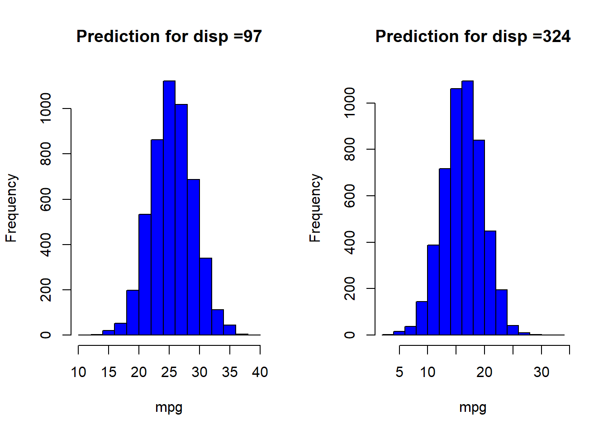
References and Additional Resources
Jake Van Der Plas on Frequentism and Bayesianism link
Larry Wasserman on Frequentism and Bayesianism link
Michael BetanCourt on a Principled Bayesian Workflow link
Stan installation instructions link
Getting started with rstanarm link
R Stan Case Studies link
Books
Doing Bayesian Data Analysis: A Tutorial with R, JAGS and STAN link
Statistical Rethinking link
Bayesian Data Analysis link
Code used to make this report is available at this link